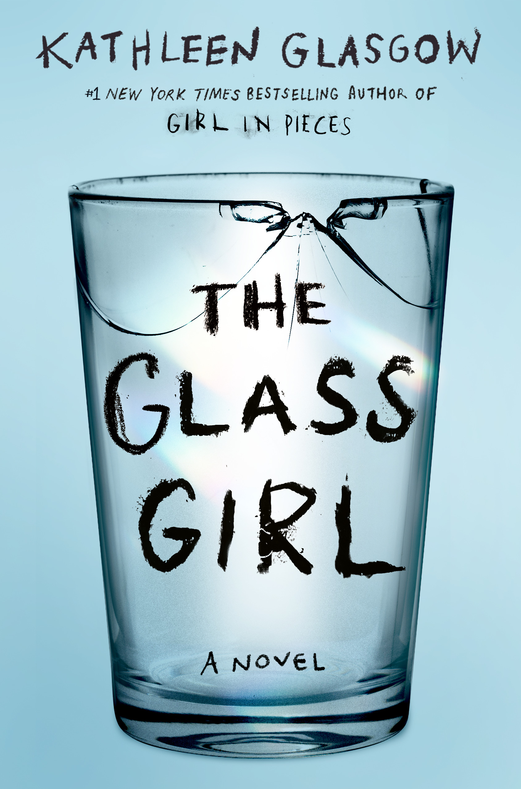

a really emotional book that
shows how fragile people can be,
but also how strong they can
become when they face their struggles.

it is about tough times in life, love,
and growing up, and it’s a
deep look at how difficult it can
be to understand yourself and others.

If Cats Disappeared from the World is a
really heartwarming and thoughtful
story about appreciating the little
things in life and dealing with loss.